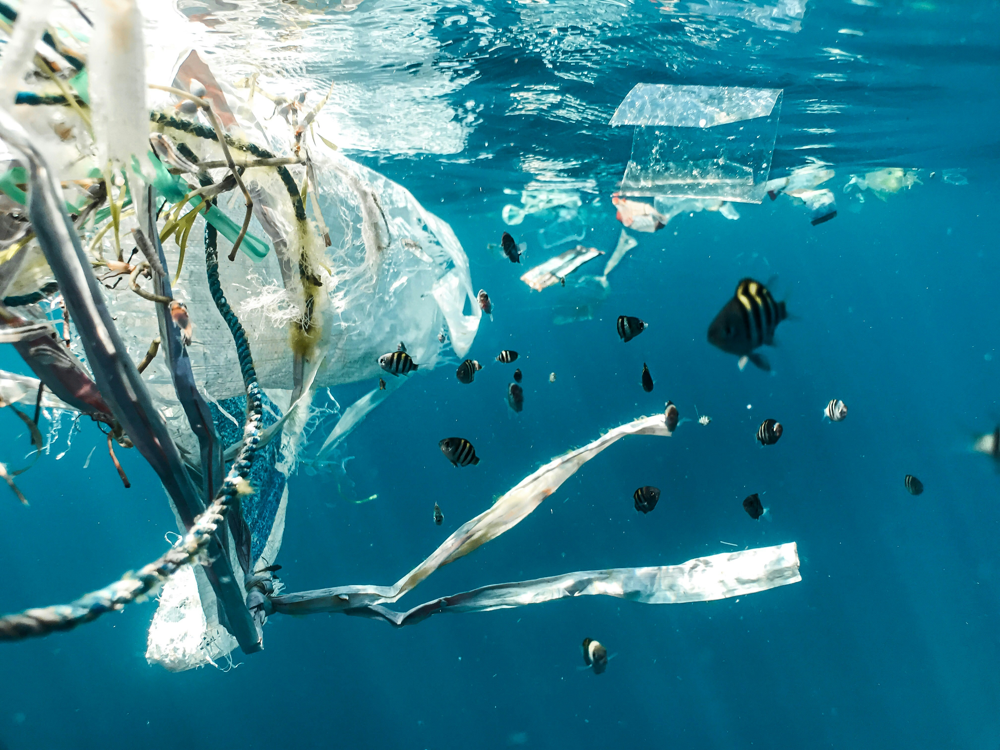
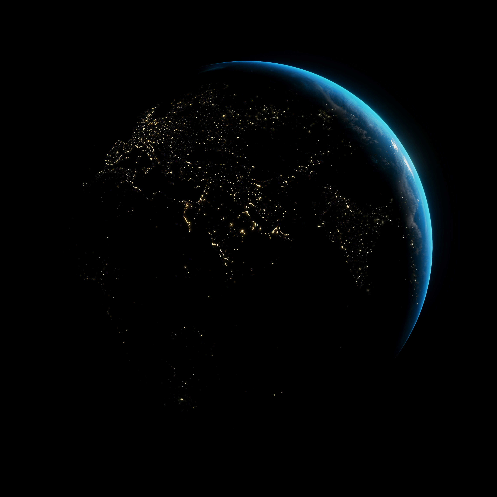

Benefícios
O PlasticMap busca:
O PlasticMap torna visível um problema invisível, conectando ciência espacial à conscientização ambiental. Qualquer pessoa pode entender como microplásticos contaminam regiões remotas.
A plataforma oferece simulações interativas, alertas de risco e visualização de zonas vulneráveis. Educadores, gestores e pesquisadores ganham uma ferramenta acessível para agir.


